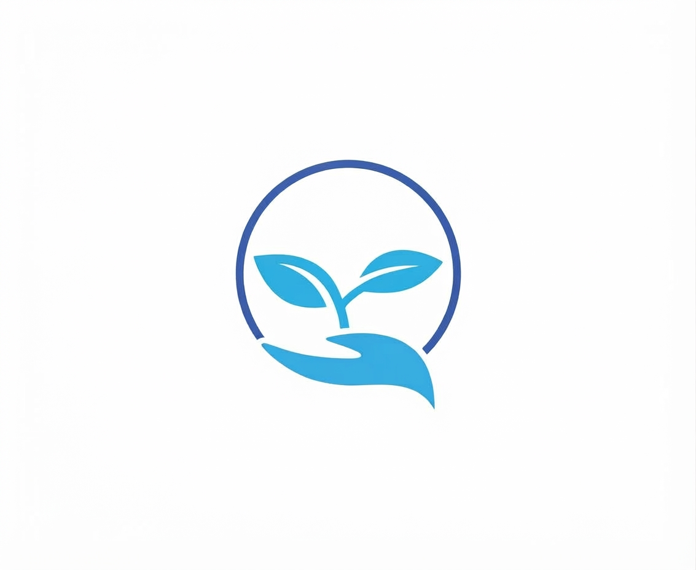
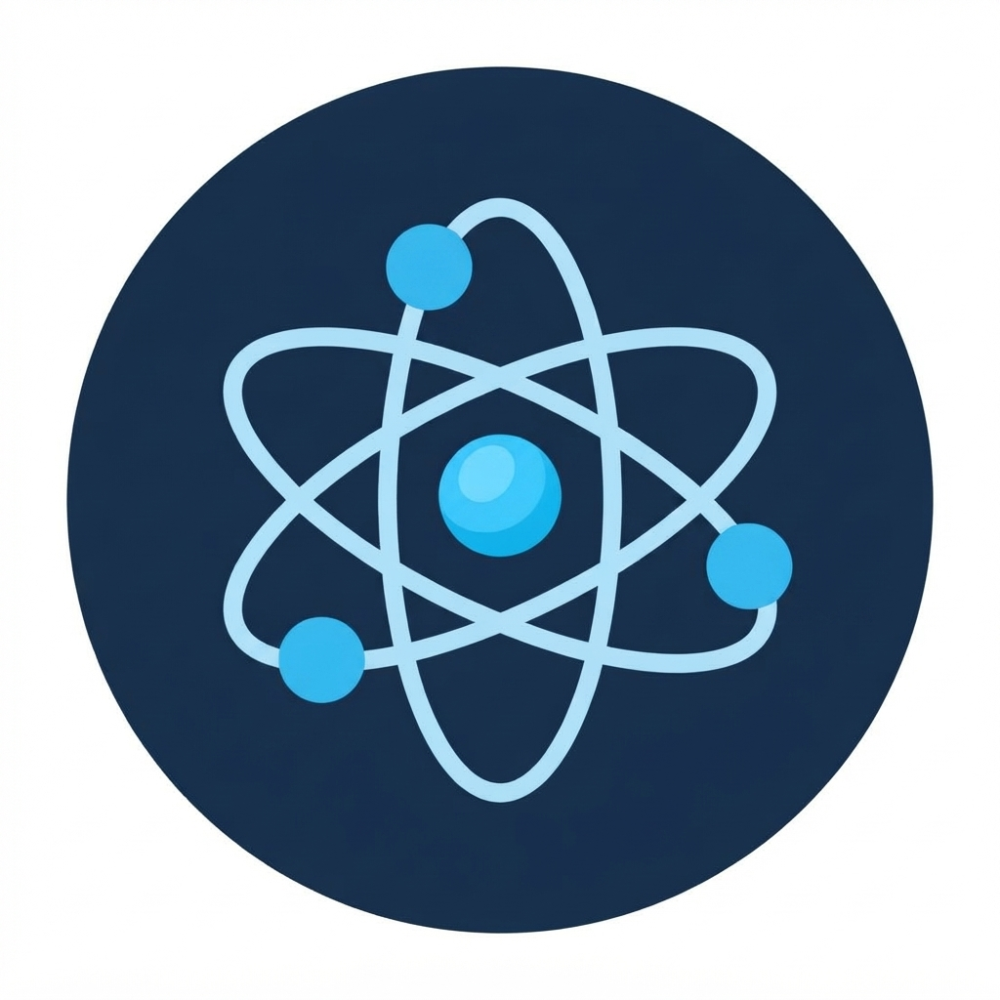
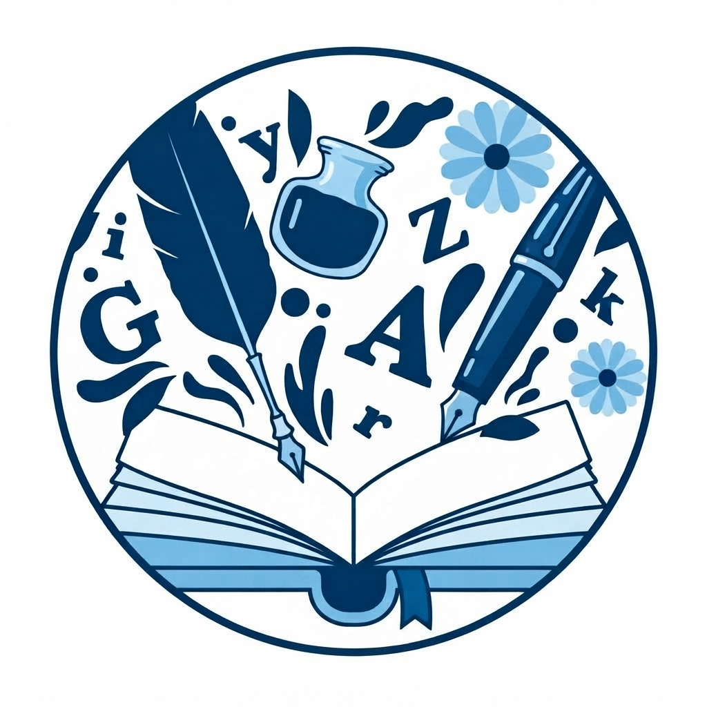
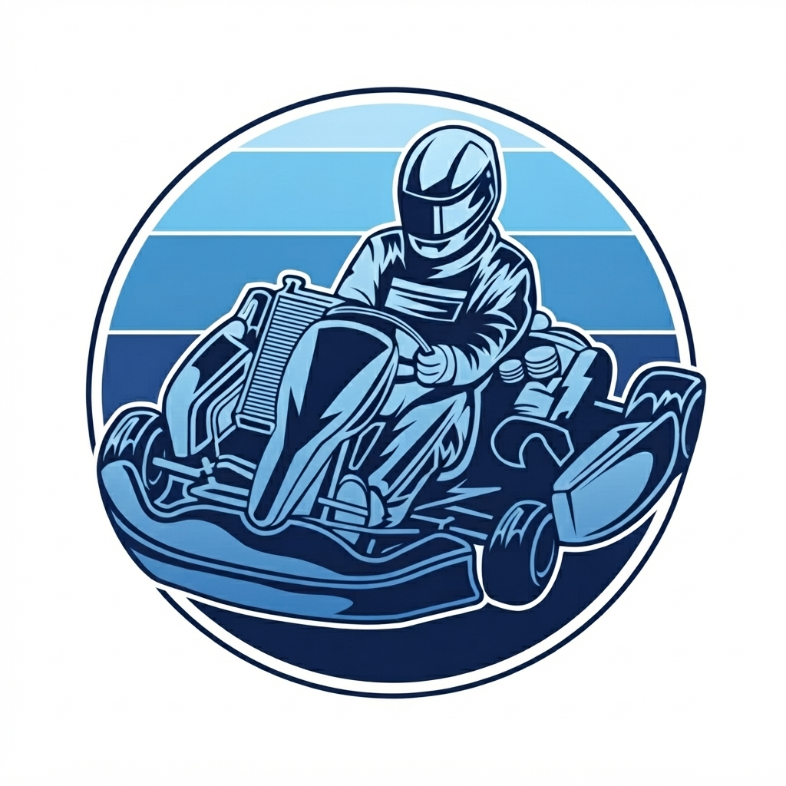

Kampüs Bitkilerini Tanıyalım
Kampüs bahçesindeki bitkileri keşfet ve bakım önerilerini öğren.
Yer: Kampüs bahçesi
ATÖLYELER VE BULUŞMALAR
Kulüplerin atölye ve buluşmalarını keşfet. Tarihler eğitim amacıyla hazırlanmış örnek etkinliklerdir.

Kampüs bahçesindeki bitkileri keşfet ve bakım önerilerini öğren.
Yer: Kampüs bahçesi
Kışa uygun bitkilerle kendi küçük saksı bahçeni hazırla.
Yer: Uygulama serası

Günlük bilim sorularını basit ve güvenli deneylerle araştır.
Yer: Fen laboratuvarı
Kampüs yaşamını kolaylaştıracak teknoloji fikirleri geliştir.
Yer: Bilgisayar laboratuvarı

Seçtiğin bir metni paylaş, farklı yorumları birlikte konuş.
Yer: Kütüphane salonu
Kısa öykü çalışmalarıyla anlatımını ve hayal gücünü geliştir.
Yer: Kütüphane salonu

Pist kurallarını ve temel güvenli sürüş ilkelerini tanı.
Yer: Go-kart pisti
Takım arkadaşlarınla tanış, strateji ve koordinasyon çalış.
Yer: Go-kart pisti
Bir oyun fikrini karakter, hedef ve kurallarıyla tasarla.
Yer: Tasarım sınıfı
Basit bir oyun prototipinin adımlarını birlikte planla.
Yer: Bilgisayar laboratuvarı
Kulüp takımlarını tanı ve ilgilendiğin branşı keşfet.
Yer: Çok amaçlı salon
Takım ruhunu sahaya taşı ve dostluk maçlarına katıl.
Yer: Spor salonu
Sevdiğin dizeleri oku veya kendi yazdıklarını paylaş.
Yer: Kütüphane salonu
Viraj, tempo ve takım içi iletişim üzerine konuş.
Yer: Go-kart pisti
Prototipleri dene, yapıcı geri bildirimlerle geliştir.
Yer: Bilgisayar laboratuvarı
Etkinlik başlıkları, tarihler ve yer bilgileri örnek içeriktir; güncel duyurular için ilgili kulüpleri takip et.